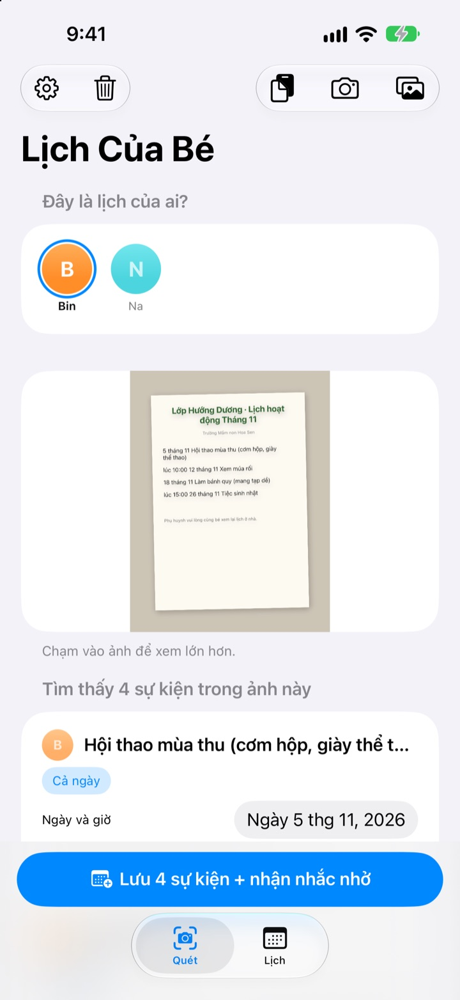
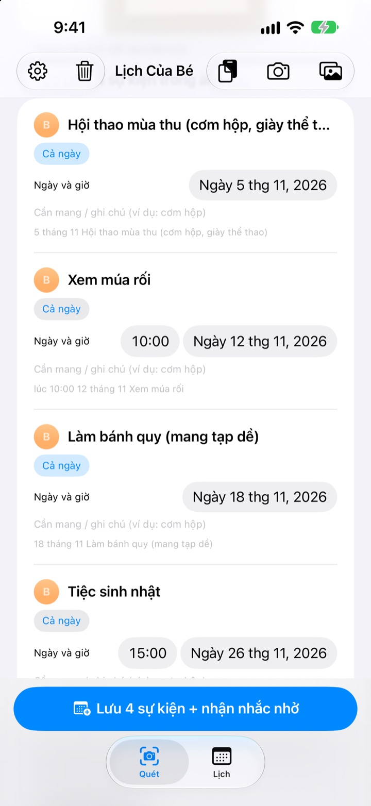
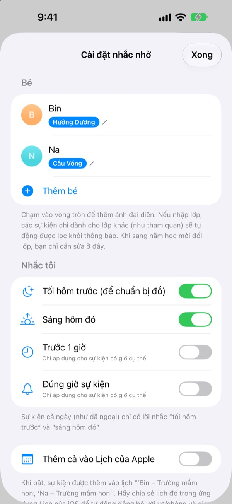
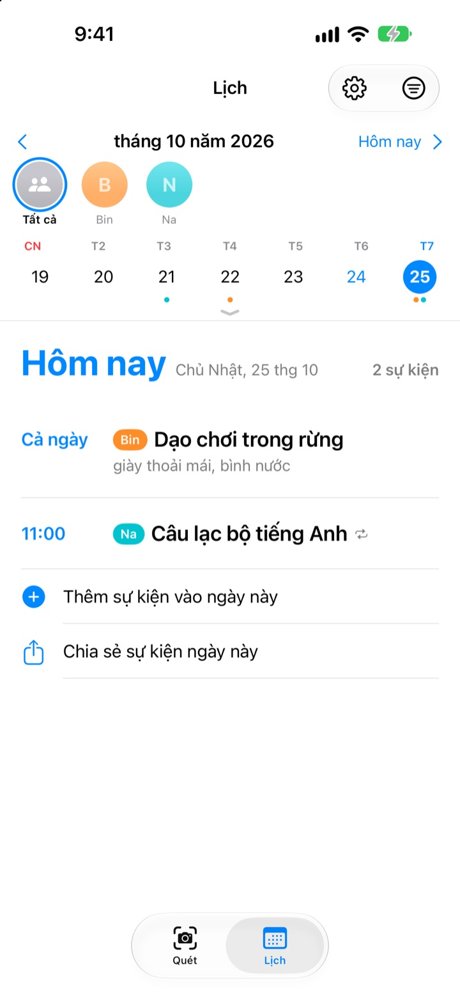

Chỉ cần chụp ảnh
Tối trước sẽ nhắc đồ
Chụp tờ lịch tháng mà trường gửi về. Lịch Của Bé đọc ngày, giờ và tên từng hoạt động rồi thêm tất cả vào lịch một lần. Tối trước buổi dã ngoại, lúc 8 giờ, sẽ có lời nhắc chuẩn bị hộp cơm.
Mọi tính năng đều miễn phí. Ảnh không rời khỏi iPhone của bạn.

Thử chụp một thông báo
Đây là thông báo mẫu về các hoạt động tháng sau. Chụp lại, ứng dụng sẽ lấy ra các sự kiện và đồ cần mang, rồi đặt lời nhắc theo thời điểm bạn chọn, giống hệt trong ứng dụng.
Vẫn đang chép thông báo của trường vào lịch?
Mỗi tháng năm sáu hoạt động, lần nào cũng phải mang thứ khác nhau: hộp cơm, đồ thể dục, tạp dề. Tờ lịch dán trên tủ lạnh thì lúc đi làm chẳng nhìn thấy, và nhớ ra thì đã là sáng hôm đó. Lịch Của Bé biến tờ giấy ấy thành sự kiện trong lịch và lời nhắc.
Một tấm ảnh, cả một tháng
Lịch dạng bảng, thư gửi phụ huynh hay tờ thông báo lẻ: chụp hoặc chọn từ thư viện ảnh là đọc được ngày, giờ và tên hoạt động. Dán tin nhắn của cô giáo cũng được, những chữ như “ngày mai” hay “thứ Sáu này” sẽ được đổi thành ngày cụ thể.
Trước khi lưu, sửa ngay tiêu đề, ngày hay đồ cần mang, cái nào không cần thì vuốt để xóa. Nhập tên lớp của bé, các hoạt động chỉ dành cho lớp khác sẽ tự được lọc bỏ.

Tối hôm trước, nhắc chuẩn bị đồ
Chọn nhắc lúc 20:00 tối hôm trước, 7:30 sáng hôm đó, trước 1 giờ hoặc đúng giờ. Đồ cần mang hiện ngay trong lời nhắc, cặp sách không thiếu thứ gì.
Bật thêm Lịch của Apple, sự kiện sẽ vào một lịch riêng mang tên bé và không bao giờ bị thêm hai lần.

Nhiều con hay cả gia đình cùng xem
Mỗi bé một màu riêng. Xem chung tất cả hoặc từng bé, ứng dụng còn dựa vào lịch sử để đoán thông báo mới là của bé nào.
Gửi đường liên kết mời là vợ chồng, ông bà hay người giúp việc đều xem và sửa được cùng một lịch. Tiện ích trên Màn hình chính cho thấy việc sắp tới.

Bắt đầu chỉ với 3 bước
- 1
Thêm bé
Nhập tên và lớp. Ảnh đại diện thêm lúc nào cũng được.
- 2
Chụp thông báo
Chụp thẳng, chữ rõ nét thì đọc chính xác hơn.
- 3
Kiểm tra rồi lưu
Cho phép thông báo, lời nhắc sẽ đến đúng lúc bạn chọn.
Khi nào có lời nhắc
- 20:00 tối hôm trước
- Chuẩn bị đồ. Bật sẵn
- 7:30 sáng hôm đó
- Việc của hôm nay. Bật sẵn
- Trước 1 giờ
- Chỉ cho hoạt động có giờ
- Đúng giờ sự kiện
- Chỉ cho hoạt động có giờ
Hoạt động cả ngày như dã ngoại chỉ có lời nhắc tối hôm trước và sáng hôm đó. Bật hoặc tắt từng loại bất cứ lúc nào trong phần cài đặt.
Mọi tính năng đều miễn phí
Miễn phí
- Đọc sự kiện từ ảnh và tin nhắn
- Sửa trước khi lưu, lọc bỏ lịch của lớp khác
- Nhắc tối hôm trước, sáng hôm đó, trước 1 giờ và đúng giờ
- Mỗi bé một màu, có lịch chung
- Đồng bộ với Lịch của Apple
- Chia sẻ với gia đình qua đường liên kết
- Tiện ích Màn hình chính
Ủng hộ nhà phát triển
- Trong phần cài đặt, bạn có thể gửi một khoản tip nhỏ tùy ý
- Tip không mở khóa gì cả. Không gửi vẫn dùng y như vậy
Không quảng cáo, không thuê bao.
Câu hỏi thường gặp
Chụp được những loại ảnh nào?
Lịch tháng dạng bảng, thư gửi phụ huynh viết thành câu, và thông báo lẻ hoặc tờ rơi. Chụp thẳng để chữ rõ nét sẽ đọc tốt hơn. Bạn cũng có thể chọn nhiều ảnh để quét cùng lúc.
Thiếu vài sự kiện hoặc tiêu đề bị sai chính tả.
Chữ viết tay hoặc chữ mờ có thể khó đọc. Sửa tiêu đề, ngày hay đồ cần mang ngay trong danh sách, cái nào không cần thì vuốt để xóa. Sự kiện bị thiếu thì thêm bằng “Thêm sự kiện thủ công” ở tab Quét rồi lưu lại.
Không nhận được lời nhắc.
Hãy kiểm tra Cài đặt > Thông báo > Lịch Của Bé xem đã cho phép thông báo chưa. Trong phần cài đặt của ứng dụng (⚙️), bạn còn chọn được muốn nhận những lời nhắc nào.
Lịch của lớp khác cũng bị thêm vào.
Nhập tên lớp của bé trong phần cài đặt, các hoạt động chỉ dành cho lớp khác sẽ được lọc bỏ. Lên lớp mới mà đổi lớp thì chỉ cần sửa ở đó.
Tôi có nhiều con.
Trong phần cài đặt có thể thêm bao nhiêu bé tùy ý, mỗi bé một ảnh đại diện. Khi quét, chọn lịch này của bé nào: trong lịch mỗi bé có màu riêng, có thể chuyển giữa xem chung và lọc theo từng bé.
Muốn cùng xem lịch với vợ hoặc chồng.
Vào “Chia sẻ lịch” trong phần cài đặt, chạm “Mời người khác cùng xem” rồi gửi đường liên kết qua tin nhắn. Người nhận cũng xem và sửa được lịch của mọi bé, ai sửa bên nào thì cả hai bên đều thấy ngay. Tính năng này không liên quan đến Chia sẻ trong gia đình của Apple.
Có cách chia sẻ nào khác không?
Nút chia sẻ ở tab Lịch gửi được tệp Lịch Của Bé, tệp lịch (.ics) hoặc bản tóm tắt dạng chữ. Bật “Thêm cả vào Lịch của Apple” sẽ tạo một lịch mang tên bé; chia sẻ lịch đó qua iCloud trong ứng dụng Lịch thì cả nhà cũng thấy giống nhau.
Ảnh hay lịch có bị gửi đi đâu không?
Không. Chữ trong ảnh được đọc hoàn toàn trên máy, dữ liệu cũng chỉ lưu trên máy. Lịch chỉ đi qua iCloud của bạn khi bạn mời ai đó bằng “Chia sẻ lịch”, và chỉ đến những người được mời.
Gặp sự cố hay muốn có tính năng mới? Gửi thư đến leeo@kakao.com. Chúng tôi thường trả lời trong 2–3 ngày. Ghi kèm dòng máy và phiên bản iOS sẽ giúp ích nhiều.